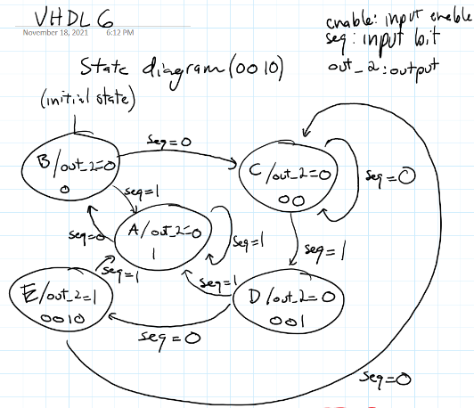
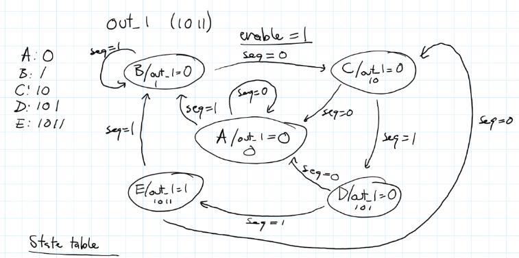
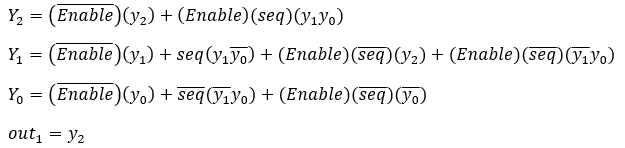
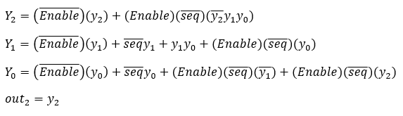
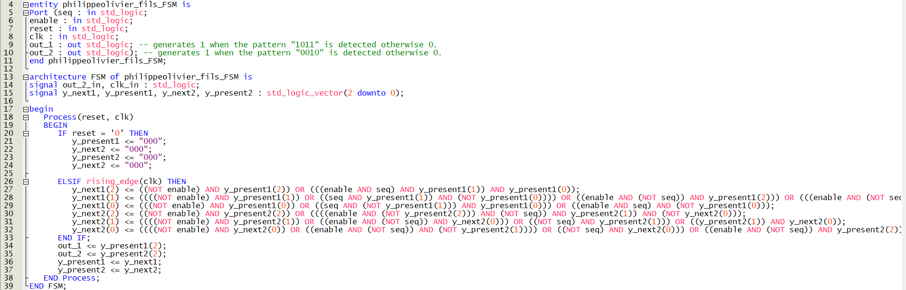
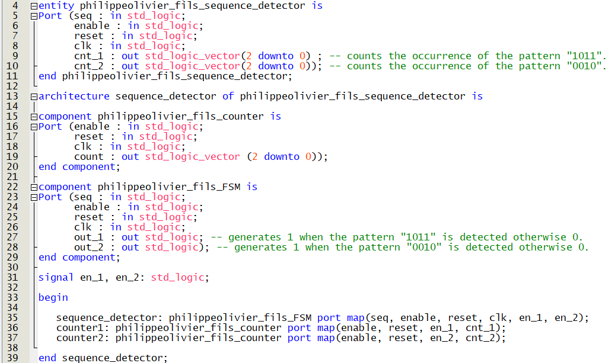

FPGA & DIGITAL DESIGN
VHDL implementation of Moore finite state machines for detecting binary sequences and counting their occurrences on an FPGA.


OVERVIEW
This project focused on designing a digital system capable of detecting specific binary patterns within an incoming bit stream and counting the number of times each pattern occurred.
Two independent sequence detectors were implemented using Moore-type finite state machines. One detector identified the 0010 sequence, while the other identified the 1011 sequence.
Each detector generated a logic output when its corresponding sequence was detected. These outputs were then used to enable dedicated counters that tracked the number of detected occurrences.
SYSTEM ARCHITECTURE
The system was divided into two main functional stages: sequence detection and sequence counting.
Two Moore finite state machines monitored the incoming binary stream and generated a high output whenever their respective sequence was detected.
Each detector output enabled a dedicated 3-bit up counter. The counter incremented when its associated sequence was detected.
FINITE STATE MACHINES
The sequence detectors were implemented as Moore finite state machines, where the output depends on the current state of the machine.
Separate state machines were developed for the two target sequences. Each state represents the portion of the target sequence that has been recognized so far.


FPGA IMPLEMENTATION
The finite state machines and sequence counters were implemented in VHDL using the Quartus development environment.
The sequence detector logic was translated into synthesizable VHDL and implemented on an Altera DE1-SoC FPGA development board. Timing analysis was also performed as part of the digital design process.


COUNTER DESIGN
The outputs of the two sequence detectors were connected to separate 3-bit up counters. Each counter was enabled by the output of its corresponding detector.
When the detector recognized its target sequence, its output enabled the associated counter, incrementing the stored count. This allowed the system to independently track occurrences of both binary patterns.
HARDWARE
The completed VHDL design was implemented on an Altera DE1-SoC FPGA development board. The project provided practical experience translating finite state machine logic into synthesizable hardware and validating the resulting digital system.
FUTURE IMPROVEMENTS
KEY TECHNOLOGIES